Decision Trees और Ensemble Methods
Theory
इस lecture में: Decision Trees में recursive splitting, classification के impurity measures (misclassification error, Gini index और cross-entropy), information gain, Regression Trees, trees को regularize करने के तरीके (depth, leaf size, pruning), correlated predictors के औसत का variance (\(\rho\sigma^2 + \frac{1-\rho}{M}\sigma^2\)), Bagging और Out-of-Bag (OOB) error, Random Forests, AdaBoost का पूरा step-by-step algorithm और exponential loss से उसका रिश्ता, और Gradient Boosting में residuals fit करना।
1. एक line में idea
Linear models पूरे input space पर एक ही formula लगाते हैं। Decision Tree इसके उलट काम करता है: वह हाँ-ना वाले सीधे सवाल पूछ-पूछकर input space को छोटे-छोटे बक्सों (regions) में काट देता है और हर बक्से में एक सरल जवाब (जैसे औसत या बहुमत) दे देता है। अकेला गहरा tree बहुत लचीला होता है पर थोड़ा सा data बदलते ही बुरी तरह बदल जाता है (high variance)। Ensemble methods सैकड़ों trees को मिलाकर इस कमज़ोरी को ताकत में बदल देते हैं: Bagging और Random Forests अलग-अलग trees का औसत लेकर variance घटाते हैं, जबकि Boosting (AdaBoost, Gradient Boosting) एक के बाद एक छोटे trees जोड़कर पिछली गलतियों को सुधारता है और bias घटाता है।
2. Decision Trees: Setup और Recursive Splitting
मान लीजिए हमारे पास \(m\) training examples \((x^{(1)}, y^{(1)}), \dots, (x^{(m)}, y^{(m)})\) हैं, जहाँ हर \(x^{(i)} \in \mathbb{R}^n\) में \(n\) features हैं। एक decision tree पूरे feature space को \(J\) अलग-अलग (disjoint) क्षेत्रों \(R_1, R_2, \dots, R_J\) में बाँट देता है, जिन्हें leaves (पत्ते) कहते हैं। हर leaf \(R_r\) में model एक स्थिर मान \(c_r\) देता है:
\[h(x) = \sum_{r=1}^{J} c_r \,\mathbf{1}\{x \in R_r\}\]
जहाँ \(\mathbf{1}\{\cdot\}\) indicator function है (शर्त सच हो तो \(1\), वरना \(0\))। सारे संभव बक्सों में से सबसे अच्छा बँटवारा ढूँढना computationally असंभव (NP-hard) है। इसलिए CART (Classification and Regression Trees) एक greedy top-down तरीका अपनाता है, जिसे recursive binary splitting कहते हैं।
शुरुआत पूरे data वाले एक अकेले क्षेत्र \(R\) (root node) से होती है। हर कदम पर हम एक feature \(j \in \{1, \dots, n\}\) और एक threshold \(t \in \mathbb{R}\) चुनते हैं, जो \(R\) को दो axis-aligned हिस्सों में काटता है:
\[R_{\text{left}}(j, t) = \{x \in R : x_j \le t\}, \qquad R_{\text{right}}(j, t) = \{x \in R : x_j > t\}\]
चूँकि हर कटाई किसी एक coordinate axis के लंबवत (\(x_j = t\)) होती है, 2D में क्षेत्र आयत (rectangles) बनते हैं और 3D में डिब्बे (axis-aligned boxes)। हम वह जोड़ी \((j, t)\) चुनते हैं जिससे नीचे परिभाषित loss या impurity सबसे ज़्यादा घटे, और फिर यही काम \(R_{\text{left}}\) और \(R_{\text{right}}\) पर अलग-अलग दोहराते हैं।
| Symbol | मतलब |
|---|---|
| \(R\), \(R_{\text{left}}\), \(R_{\text{right}}\) | वर्तमान node और split के बाद बने बाएँ व दाएँ child regions |
| \(|R|\) | क्षेत्र \(R\) में आने वाले training examples की संख्या |
| \(\hat{p}_k(R)\) | क्षेत्र \(R\) में class \(k\) के examples का अनुपात |
| \(L(R)\) | क्षेत्र \(R\) की impurity (अशुद्धता) नापने वाला function |
| \(M\) | ensemble में मिलाए गए कुल trees (या weak learners) की संख्या |
3. Classification Trees: Misclassification, Gini और Cross-Entropy
मान लीजिए \(y \in \{1, \dots, K\}\) में \(K\) classes हैं। किसी क्षेत्र \(R\) में class \(k\) का अनुपात है:
\[\hat{p}_k = \frac{1}{|R|} \sum_{x^{(i)} \in R} \mathbf{1}\{y^{(i)} = k\}\]
अगर \(R\) एक leaf बनता है, तो हम बहुमत वाली class \(c_R = \arg\max_k \hat{p}_k\) predict करते हैं। पर split चुनते समय हमें नापना होता है कि क्षेत्र \(R\) कितना "मिलावटी" (impure) है। अगर सारे examples एक ही class के हों (\(\hat{p}_k = 1\)), तो impurity \(0\) होनी चाहिए; अगर सारी classes बराबर बँटी हों, तो impurity सबसे ज़्यादा होनी चाहिए। इसके तीन मुख्य पैमाने हैं:
\[\begin{aligned} \text{Misclassification error:} \quad & L_{\text{mis}}(R) = 1 - \max_{k} \hat{p}_k \\ \text{Gini index:} \quad & L_{\text{Gini}}(R) = \sum_{k=1}^{K} \hat{p}_k (1 - \hat{p}_k) = 1 - \sum_{k=1}^{K} \hat{p}_k^2 \\ \text{Cross-entropy (Entropy):} \quad & L_{\text{ent}}(R) = -\sum_{k=1}^{K} \hat{p}_k \log_2 \hat{p}_k \qquad (0 \log_2 0 = 0) \end{aligned}\]
दो classes (\(K = 2\)) के लिए अगर पहली class की प्रायिकता \(p = \hat{p}_1\) लिखें, तो ये तीनों बन जाते हैं: \(L_{\text{mis}}(p) = 1 - \max(p, 1-p)\), \(L_{\text{Gini}}(p) = 2p(1-p)\), और \(L_{\text{ent}}(p) = -p\log_2 p - (1-p)\log_2(1-p)\)।
Information Gain और Misclassification की समस्या
किसी split \((j, t)\) की अच्छाई हम Information Gain (या impurity reduction) से नापते हैं:
\[\mathrm{IG}(R, j, t) = L(R) - \frac{|R_{\text{left}}|}{|R|} L(R_{\text{left}}) - \frac{|R_{\text{right}}|}{|R|} L(R_{\text{right}})\]
जब \(L = L_{\text{ent}}\) हो तो इसे शास्त्रीय रूप से information gain कहते हैं, और \(L = L_{\text{Gini}}\) हो तो Gini gain। हर node पर हम सभी features \(j\) और सभी संभव thresholds \(t\) (training values के बीच के midpoints) पर \(\mathrm{IG}(R, j, t)\) निकालकर सबसे बड़े gain वाला split चुनते हैं।
एक ज़रूरी सवाल: जब अंत में हमें accuracy ही चाहिए, तो split चुनते समय सीधे \(L_{\text{mis}}\) क्यों नहीं लगाते? एक छोटे उदाहरण से कारण साफ़ हो जाता है। मान लीजिए \(R\) में class 1 के \(70\) और class 0 के \(30\) examples हैं (\(L_{\text{mis}}(R) = 0.30\))। एक split से बाईं ओर \((50, 30)\) और दाईं ओर \((20, 0)\) मिलते हैं। दायाँ हिस्सा पूरी तरह शुद्ध हो गया है! फिर भी दोनों हिस्सों में बहुमत अभी भी class 1 का ही है, इसलिए weighted misclassification error है:
\[\frac{80}{100}\left(\frac{30}{80}\right) + \frac{20}{100}(0) = 0.30 = L_{\text{mis}}(R) \quad\Longrightarrow\quad \mathrm{IG}_{\text{mis}} = 0\]
\(L_{\text{mis}}(p)\) दोनों तरफ़ (\(p < 0.5\) और \(p > 0.5\)) सीधी रेखा है, strictly concave नहीं। इसलिए जब दोनों children में बहुमत वही रहे, \(L_{\text{mis}}\) को कोई सुधार दिखता ही नहीं और tree बढ़ना बंद कर सकता है। इसके उलट \(L_{\text{Gini}}(p)\) और \(L_{\text{ent}}(p)\) strictly concave हैं: Jensen's inequality से जब भी दोनों children के अनुपात अलग होंगे, \(\mathrm{IG} > 0\) मिलेगा और शुद्ध leaf बनाने वाले split को इनाम मिलेगा। व्यवहार में Gini और cross-entropy बहुत मिलते-जुलते trees बनाते हैं; pruning के समय \(L_{\text{mis}}\) इस्तेमाल करना ठीक रहता है।
4. Regression Trees
जब target \(y^{(i)} \in \mathbb{R}\) continuous हो, तो हम squared error को loss बनाते हैं। किसी क्षेत्र \(R_r\) में अगर हम स्थिर मान \(c_r\) predict करें, तो उस क्षेत्र का squared error है \(S(c_r) = \sum_{x^{(i)} \in R_r} (y^{(i)} - c_r)^2\)। सबसे अच्छा \(c_r\) निकालने के लिए derivative को zero रखें:
\[\frac{d S}{d c_r} = -2 \sum_{x^{(i)} \in R_r} \left(y^{(i)} - c_r\right) = 0 \quad\Longrightarrow\quad \hat{c}_r = \frac{1}{|R_r|} \sum_{x^{(i)} \in R_r} y^{(i)}\]
यानी हर leaf का सबसे अच्छा prediction बस उसके अंदर गिरने वाले training targets का sample mean है। इसलिए क्षेत्र \(R\) की impurity उसके अंदर का variance है, और सबसे अच्छा split \((j, t)\) वह है जो दोनों हिस्सों के कुल squared error को सबसे छोटा करे:
\[\min_{j,\, t} \left[ \sum_{x^{(i)} \in R_{\text{left}}(j, t)} \left(y^{(i)} - \hat{c}_{\text{left}}\right)^2 + \sum_{x^{(i)} \in R_{\text{right}}(j, t)} \left(y^{(i)} - \hat{c}_{\text{right}}\right)^2 \right]\]
इस तरह बना function \(h(x)\) एक सीढ़ीदार (piecewise-constant) सतह होता है। Splits बढ़ने पर ये सीढ़ियाँ महीन होती जाती हैं और किसी भी smooth function के करीब पहुँच सकती हैं।
5. Trees को Regularize करना
अगर हम तब तक काटते रहें जब तक हर leaf में सिर्फ़ एक example न बचे, तो training error \(0\) हो जाएगा पर tree हर छोटे से noise को रट लेगा (severe overfitting)। इसे रोकने के मुख्य तरीके ये हैं:
- Maximum depth (
max_depth): root से किसी भी leaf तक के सवालों की संख्या सीमित कर दें। - Minimum leaf size (
min_samples_leaf): कोई split तभी मंज़ूर करें जब बाएँ और दाएँ दोनों हिस्सों में कम से कम \(s_{\min}\) examples बचें। इससे बहुत छोटे, noisy बक्से नहीं बनते। - Cost-complexity pruning (weakest-link pruning): कई बार शुरुआत में एक मामूली सा दिखने वाला split आगे चलकर बहुत शानदार दूसरा split खोल देता है (जैसे XOR में पहला कट कोई gain नहीं देता, पर दूसरा कट सब साफ़ कर देता है)। जल्दी रुकने से ऐसे splits छूट जाते हैं। इसलिए बेहतर तरीका है कि पहले एक बड़ा tree \(T_0\) उगाएँ, और फिर उसे पीछे से छाँटकर (prune करके) ऐसा subtree \(T \subset T_0\) चुनें जो नीचे दिए गए penalized cost को minimize करे:
\[R_\alpha(T) = \sum_{r=1}^{|T|} \sum_{x^{(i)} \in R_r} \ell\left(y^{(i)}, \hat{c}_r\right) + \alpha |T|\]
यहाँ \(|T|\) subtree के leaves की संख्या है और \(\alpha \ge 0\) regularization parameter है (ठीक Lecture 8 के \(\lambda\) जैसा)। \(\alpha = 0\) पूरा बड़ा tree रखता है; \(\alpha\) बढ़ाने पर छोटे फ़ायदे वाली शाखाएँ कटती जाती हैं। सबसे अच्छा \(\alpha\) cross validation से चुनते हैं।
6. Ensembles और Correlated Predictors का Variance
गहरे decision trees का bias कम होता है पर variance बहुत ज़्यादा होता है। क्या हम कई noisy पर कम-bias वाले models का औसत लेकर variance घटा सकते हैं? आइए इसकी सटीक गणित देखें।
मान लीजिए किसी तय test बिंदु \(x\) पर हमारे पास \(M\) अलग-अलग पर एक जैसे बंटन (identically distributed) वाले random predictions \(Z_1, Z_2, \dots, Z_M\) हैं। हर एक का mean \(\mu\), variance \(\mathrm{Var}(Z_b) = \sigma^2\), और किन्हीं भी दो अलग predictions (\(b \neq b'\)) के बीच pairwise correlation \(\mathrm{Corr}(Z_b, Z_{b'}) = \rho\) है, यानी \(\mathrm{Cov}(Z_b, Z_{b'}) = \rho\sigma^2\)। इनके औसत \(\bar{Z} = \frac{1}{M}\sum_{b=1}^{M} Z_b\) का expectation \(E[\bar{Z}] = \mu\) है (यानी bias बिल्कुल नहीं बदलता)। अब \(\bar{Z}\) का variance निकालते हैं:
\[\begin{aligned} \mathrm{Var}\!\left(\frac{1}{M}\sum_{b=1}^{M} Z_b\right) &= \frac{1}{M^2} \mathrm{Var}\!\left(\sum_{b=1}^{M} Z_b\right) \\ &= \frac{1}{M^2} \left( \sum_{b=1}^{M} \mathrm{Var}(Z_b) + \sum_{b=1}^{M}\sum_{b' \neq b} \mathrm{Cov}(Z_b, Z_{b'}) \right) \\ &= \frac{1}{M^2} \left( M\sigma^2 + M(M - 1)\rho\sigma^2 \right) \\ &= \frac{\sigma^2}{M} + \frac{M - 1}{M}\rho\sigma^2 = \rho\sigma^2 + \frac{1 - \rho}{M}\sigma^2 \end{aligned}\]
यह एक बेहद महत्वपूर्ण formula है:
\[\mathrm{Var}(\bar{Z}) = \rho\sigma^2 + \frac{1 - \rho}{M}\sigma^2\]
इसके दो हिस्से ध्यान से देखिए:
- जब हम ensemble का आकार \(M\) बढ़ाते हैं (\(M \to \infty\)), तो दूसरा हिस्सा \(\frac{1-\rho}{M}\sigma^2 \to 0\) हो जाता है। अगर सब models पूरी तरह independent हों (\(\rho = 0\)), तो variance \(\sigma^2 / M\) के हिसाब से शून्य तक गिर सकता है।
- पहला हिस्सा \(\rho\sigma^2\) \(M\) पर निर्भर ही नहीं करता! अगर सारे trees आपस में बहुत मिलते-जुलते हैं (\(\rho\) बड़ा है), तो हज़ारों trees जोड़ने पर भी variance \(\rho\sigma^2\) से नीचे नहीं जाएगा। Bagging और Random Forests की पूरी कहानी पहले \(M\) बढ़ाकर दूसरा term मारने और फिर \(\rho\) घटाकर पहला term छोटा करने की है।
7. Bagging, Out-of-Bag Error और Random Forests
Bagging (Bootstrap Aggregating)
असल में हमारे पास सिर्फ़ एक training set \(S\) है, तो \(M\) अलग trees कहाँ से लाएँ? हम \(S\) से with replacement (एक example चुनकर वापस झोले में डालते हुए) \(m\) examples खींचकर एक नया bootstrap sample \(S^{*b}\) बनाते हैं। यही काम \(M\) बार करके \(S^{*1}, \dots, S^{*M}\) बनाते हैं और हर एक पर बिना छाँटे गहरा tree \(\hat{h}_b\) सिखाते हैं।
- Regression में: अंतिम जवाब औसत है: \(\hat{h}_{\text{bag}}(x) = \frac{1}{M}\sum_{b=1}^{M} \hat{h}_b(x)\)।
- Classification में: अंतिम जवाब सभी \(M\) trees का majority vote है (या उनकी predicted probabilities का औसत)।
अकेले tree की तीखी सीढ़ियाँ औसत लेने पर चिकनी हो जाती हैं। ध्यान दें कि \(M\) बढ़ाने से bagging overfit नहीं करता, बस test error एक सीमा पर जाकर रुक जाता है।
Out-of-Bag (OOB) Error
एक bootstrap sample \(S^{*b}\) बनाते समय किसी खास example \((x^{(i)}, y^{(i)})\) के एक बार के चुनाव में न आने की प्रायिकता \(1 - \frac{1}{m}\) है। \(m\) स्वतंत्र चुनावों में उसके एक बार भी न चुने जाने की प्रायिकता है:
\[P\left((x^{(i)}, y^{(i)}) \notin S^{*b}\right) = \left(1 - \frac{1}{m}\right)^m \xrightarrow{m \to \infty} e^{-1} \approx 0.368\]
यानी हर tree औसतन लगभग \(63.2\%\) अनोखे examples देखता है और लगभग \(36.8\%\) examples बाहर छूट जाते हैं (इन्हें Out-of-Bag या OOB examples कहते हैं)। अब हर training example \(i\) के लिए सिर्फ़ उन्हीं लगभग \(0.368 M\) trees का औसत/वोट लें जिन्होंने \(i\) को training में नहीं देखा। इस तरह सारे \(m\) बिंदुओं पर निकला error OOB error कहलाता है। यह बिना अलग से \(k\)-fold चलाए लगभग मुफ़्त में cross-validation जैसा सटीक generalization अंदाज़ा दे देता है।
Random Forests: \(\rho\) को कैसे घटाएँ?
Bagging में एक दिक़्क़त बची रहती है। मान लीजिए data में एक-दो बहुत ताकतवर features हैं। तब लगभग हर bootstrap sample में सबसे ऊपर के splits उन्हीं एक-दो features पर होंगे। नतीजा यह कि सारे \(M\) trees दिखने में काफ़ी एक जैसे होंगे, उनके बीच correlation \(\rho\) बड़ा रहेगा, और \(\rho\sigma^2\) की दीवार variance को ज़्यादा गिरने नहीं देगी।
Random Forest में एक छोटा पर जादुई बदलाव किया जाता है: हर tree के हर split पर, सारे \(n\) features पर खोजने से पहले हम बिना replacement के सिर्फ़ \(k\) random features का एक नया उपसमुच्चय चुनते हैं, और सर्वश्रेष्ठ split सिर्फ़ उन्हीं \(k\) features के अंदर ढूँढते हैं।
- Classification में आम पसंद \(k = \lfloor \sqrt{n} \rfloor\) है, और regression में \(k = \lfloor n / 3 \rfloor\)। (जब \(k = n\) रखें, तो यह वापस साधारण Bagging बन जाता है।)
- कई splits में सबसे दबंग feature उन \(k\) चुने हुए नामों में होता ही नहीं, इसलिए दूसरे काम के features को भी मौका मिलता है। इससे अलग-अलग trees के बीच correlation \(\rho\) तेज़ी से गिरता है और \(\rho\sigma^2\) छोटा होने से ensemble कहीं बेहतर generalize करता है।
8. Boosting और AdaBoost Step by Step
Bagging में सारे गहरे trees समानांतर (in parallel) बनते हैं ताकि variance घटे। Boosting ठीक उल्टी दिशा से चलता है: हम बहुत सरल, उच्च-bias वाले weak learners (जैसे सिर्फ़ एक split वाले decision stumps, जिनकी depth \(1\) है) लेते हैं और उन्हें एक के बाद एक (sequentially) सिखाते हैं। हर नया model उन examples पर ज़्यादा ध्यान देता है जिन पर पिछले models ने गलती की थी।
AdaBoost Algorithm
मान लीजिए binary classification है और सुविधा के लिए labels \(y^{(i)} \in \{-1, +1\}\) हैं। (कई किताबों में round index को \(m\) और classifier के weight को \(\alpha_m\) लिखते हैं; हमारे course notation में \(m\) examples की संख्या है, इसलिए हम round index को \(t = 1, \dots, M\) और उसके weight को \(\alpha_t\) लिखेंगे।)
- शुरुआत: सभी \(m\) examples को बराबर sample weight दें: \(w_i^{(1)} = \frac{1}{m}\), जहाँ \(i = 1, \dots, m\)।
-
हर round \(t = 1, 2, \dots, M\) के लिए: - वर्तमान weights \(w^{(t)}\) के साथ एक weak classifier \(G_t(x) \in \{-1, +1\}\) fit करें जो weighted classification error को minimize करे:
\[\mathrm{err}_t = \frac{\sum_{i=1}^{m} w_i^{(t)} \,\mathbf{1}\{y^{(i)} \neq G_t(x^{(i)})\}}{\sum_{i=1}^{m} w_i^{(t)}}\]
-
इस weak learner की भरोसेमंदता (say / weight) \(\alpha_t\) निकालें:
\[\alpha_t = \frac{1}{2} \ln \left( \frac{1 - \mathrm{err}_t}{\mathrm{err}_t} \right)\]
-
अगले round के लिए sample weights को update करें और फिर जोड़ \(1\) बनाने के लिए normalize करें (\(Z_t\) normalization factor है):
\[w_i^{(t+1)} := \frac{w_i^{(t)} \exp\!\left(-\alpha_t \, y^{(i)} G_t(x^{(i)})\right)}{Z_t}\]
- अंतिम prediction: सभी \(M\) weak learners का \(\alpha_t\)-weighted बहुमत लें:
\[G(x) = \mathrm{sign}\!\left( \sum_{t=1}^{M} \alpha_t G_t(x) \right)\]
इन सूत्रों का सहज अर्थ तुरंत समझ आता है:
- अगर weak learner सिक्का उछालने से थोड़ा भी बेहतर है (\(\mathrm{err}_t < 0.5\)), तो \(\frac{1 - \mathrm{err}_t}{\mathrm{err}_t} > 1\) और इसलिए \(\alpha_t > 0\)। \(\mathrm{err}_t\) जितना छोटा होगा, \(\alpha_t\) उतना बड़ा होगा (आख़िरी वोट में उसकी आवाज़ उतनी भारी होगी)। \(\mathrm{err}_t = 0.5\) पर \(\alpha_t = 0\)।
- सही prediction पर \(y^{(i)} G_t(x^{(i)}) = +1\) होता है, इसलिए उस बिंदु का weight \(e^{-\alpha_t} < 1\) से गुणा होकर घट जाता है। गलत prediction पर \(y^{(i)} G_t(x^{(i)}) = -1\) होता है, इसलिए उसका weight \(e^{+\alpha_t} > 1\) से गुणा होकर बढ़ जाता है। अगला weak learner \(G_{t+1}\) मजबूरन इन्हीं कठिन बिंदुओं को सुधारने की कोशिश करता है।
\(\alpha_t\) का यही formula कहाँ से आया? (Exponential Loss)
AdaBoost असल में exponential loss \(\ell_{\exp}(y, F(x)) = \exp(-y F(x))\) पर forward stagewise additive modeling है। मान लीजिए \(t - 1\) steps तक हमने \(F_{t-1}(x) = \sum_{s=1}^{t-1} \alpha_s G_s(x)\) बना लिया है और पिछले हिस्से को छेड़े बिना नया पद \(\alpha G(x)\) जोड़कर \(F_t(x) = F_{t-1}(x) + \alpha G(x)\) बनाते हैं। कुल loss है:
\[J(\alpha, G) = \sum_{i=1}^{m} \exp\!\left(-y^{(i)}\big(F_{t-1}(x^{(i)}) + \alpha G(x^{(i)})\big)\right) = \sum_{i=1}^{m} \tilde{w}_i^{(t)} \exp\!\left(-\alpha y^{(i)} G(x^{(i)})\right)\]
जहाँ \(\tilde{w}_i^{(t)} = \exp(-y^{(i)} F_{t-1}(x^{(i)}))\) बिना normalize किए sample weights हैं। सही (\(y^{(i)} = G(x^{(i)})\)) और गलत (\(y^{(i)} \neq G(x^{(i)})\)) बिंदुओं को अलग करें। मान लीजिए कुल भार \(W = \sum_{i=1}^{m} \tilde{w}_i^{(t)}\) और गलत बिंदुओं का भार \(W_e = \sum_{y^{(i)} \neq G(x^{(i)})} \tilde{w}_i^{(t)}\) है, ताकि \(\mathrm{err}_t = W_e / W\)। तब:
\[J(\alpha, G) = (W - W_e)e^{-\alpha} + W_e e^{\alpha} = e^{-\alpha} W + (e^{\alpha} - e^{-\alpha}) W_e\]
पहली बात: किसी भी \(\alpha > 0\) के लिए \(e^{\alpha} - e^{-\alpha} > 0\) है, इसलिए सबसे अच्छा \(G_t\) वही है जो \(W_e\) (यानी weighted error \(\mathrm{err}_t\)) को minimize करे। दूसरी बात: \(G_t\) तय होने के बाद \(\alpha\) के सापेक्ष derivative शून्य रखें:
\[\frac{\partial J}{\partial \alpha} = -(W - W_e)e^{-\alpha} + W_e e^{\alpha} = 0 \quad\Longrightarrow\quad e^{2\alpha} = \frac{W - W_e}{W_e} = \frac{1 - \mathrm{err}_t}{\mathrm{err}_t}\]
दोनों तरफ़ \(\ln\) लेकर \(2\) से भाग देते ही \(\alpha_t = \frac{1}{2}\ln\frac{1 - \mathrm{err}_t}{\mathrm{err}_t}\) निकल आता है, और \(\tilde{w}_i^{(t+1)} = \exp(-y^{(i)} F_t(x^{(i)})) = \tilde{w}_i^{(t)} \exp(-\alpha_t y^{(i)} G_t(x^{(i)}))\) ठीक AdaBoost का re-weighting नियम बन जाता है!
9. Gradient Boosting: Residuals को Fit करना
AdaBoost exponential loss से बँधा है, जो outliers के प्रति बहुत संवेदनशील होता है (बड़े नकारात्मक margin पर \(e^{-yF(x)}\) विस्फोटक रूप से बढ़ता है)। Gradient Boosting इसी additive विचार को किसी भी differentiable loss \(\ell(y, F(x))\) के लिए खोल देता है।
सबसे सरल केस squared error \(\ell(y, F) = \frac{1}{2}(y - F)^2\) से समझें। शुरुआत एक constant model \(F_0(x) = \bar{y}\) से करें। अगर वर्तमान model \(F_{t-1}(x)\) है, तो हर बिंदु पर उसकी बची हुई गलती यानी residual है \(r_{it} = y^{(i)} - F_{t-1}(x^{(i)})\)। अगर हम इन residuals \((x^{(i)}, r_{it})\) पर एक छोटा regression tree \(h_t(x)\) fit कर दें, तो \(F_{t-1}(x) + h_t(x) \approx F_{t-1}(x) + (y - F_{t-1}(x)) = y\)!
सामान्य loss \(\ell(y, F)\) के लिए हम function space में एक कदम Gradient Descent करते हैं। सदिश \(\big(F(x^{(1)}), \dots, F(x^{(m)})\big)\) के सापेक्ष loss की सबसे तेज़ गिरावट की दिशा negative gradient है, जिसे pseudo-residuals कहते हैं:
\[r_{it} = -\left[ \frac{\partial \,\ell\big(y^{(i)}, F(x^{(i)})\big)}{\partial \,F(x^{(i)})} \right]_{F = F_{t-1}}, \qquad i = 1, \dots, m\]
ध्यान दें कि squared error \(\frac{1}{2}(y - F)^2\) के लिए \(-\frac{\partial \ell}{\partial F} = y^{(i)} - F_{t-1}(x^{(i)})\), यानी pseudo-residual ठीक साधारण residual ही है! पूरा Gradient Boosted Trees algorithm इस प्रकार है:
- शुरुआत: \(F_0(x) = \arg\min_c \sum_{i=1}^{m} \ell(y^{(i)}, c)\)।
-
हर round \(t = 1, \dots, M\) के लिए: - सभी \(i = 1, \dots, m\) के लिए pseudo-residuals \(r_{it}\) निकालें। - Dataset \(\{(x^{(i)}, r_{it})\}_{i=1}^{m}\) पर एक उथला (shallow, जैसे depth \(2\) से \(5\) वाला) regression tree \(h_t(x)\) fit करें। - एक छोटे learning rate (shrinkage) \(\nu \in (0, 1]\) के साथ model को update करें:
\[F_t(x) = F_{t-1}(x) + \nu \, h_t(x)\]
-
अंतिम model: \(F_M(x) = F_0(x) + \nu \sum_{t=1}^{M} h_t(x)\)।
छोटा \(\nu\) (जैसे \(0.05\) या \(0.1\)) हर कदम को संयमित रखता है ताकि कोई एक tree अकेले हावी न हो जाए; इसके बदले थोड़ा बड़ा \(M\) लेना पड़ता है, पर generalization काफ़ी सुधर जाता है। आधुनिक tabular ML के दिग्गज औज़ार (XGBoost, LightGBM, CatBoost) इसी ढाँचे में second-order (Newton) derivatives और तेज़ histogram splitting जोड़कर बने हैं।
| गुण | Bagging / Random Forest | Boosting (AdaBoost / Gradient Boosting) |
|---|---|---|
| Base trees कैसे होते हैं? | गहरे, कम bias, उच्च variance | उथले (stumps या depth 2 से 5), उच्च bias, कम variance |
| Training कैसे चलती है? | सारे trees एक-दूसरे से स्वतंत्र, parallel में | एक के बाद एक (sequentially), पिछली गलतियों पर |
| मुख्य निशाना क्या है? | Variance घटाना | Bias घटाना |
| \(M\) बहुत बड़ा कर दें तो? | Overfit नहीं करता, error स्थिर हो जाता है | बहुत बड़ा \(M\) अंततः noise रटकर overfit कर सकता है |
10. Practical बातें और आम गलतियाँ
- Decision trees को feature scaling की ज़रूरत नहीं होती। किसी feature को \(100\) से गुणा करने या कोई भी strictly monotonic बदलाव करने से बस split का threshold \(t\) बदल जाता है, पेड़ की बनावट और predictions वही रहते हैं।
- Tabular data पर tree ensembles अक्सर पहली पसंद होते हैं। मिश्रित संख्यात्मक व categorical features, अलग-अलग scales और टेढ़ी-मेढ़ी interactions पर Random Forest और Gradient Boosting बिना ज़्यादा preprocessing के बहुत मज़बूत baseline देते हैं।
- Extrapolation से सावधान रहें। हर regression tree का prediction training set के सबसे छोटे और सबसे बड़े \(y^{(i)}\) के बीच ही बँधा रहता है। इसलिए अगर test input training range के बाहर जा रहा हो (जैसे समय के साथ बढ़ता हुआ trend), तो अकेला या boosted tree भी बाहर सपाट (flat) जवाब ही देगा।
- Noisy labels या भारी outliers में AdaBoost से बचें। Exponential loss गलत या गड़बड़ label वाले बिंदु का भार हर round में बेतहाशा बढ़ाता चला जाता है। ऐसे में Random Forest, या Huber / logistic loss के साथ Gradient Boosting कहीं सुरक्षित रहते हैं।
- Hyperparameter tuning का फ़र्क समझें। Random Forest बिना ज़्यादा छेड़छाड़ के अच्छा चलता है (\(M\) बड़ा रखें, \(k = \sqrt{n}\) से शुरू करें)। Gradient Boosting अक्सर थोड़ी बेहतर सटीकता देता है, पर उसमें tree depth, learning rate \(\nu\) और rounds \(M\) (early stopping के साथ) को एक साथ सावधानी से चुनना पड़ता है।
11. खुद से पूछें
- मान लीजिए किसी binary classification node पर \(80\) positive और \(20\) negative examples हैं। एक split बाएँ में \((60, 20)\) और दाएँ में \((20, 0)\) देता है। इस split के लिए \(L_{\text{mis}}\) और \(L_{\text{Gini}}\) दोनों से \(\mathrm{IG}\) निकालकर दिखाइए कि दोनों के फ़ैसले क्यों अलग हैं।
- Variance के सूत्र \(\rho\sigma^2 + \frac{1-\rho}{M}\sigma^2\) में अगर आप Random Forest में प्रति-split features की संख्या \(k\) को \(n\) से घटाकर \(1\) तक ले जाएँ, तो \(\rho\) और अकेले tree के variance/bias दोनों पर क्या असर पड़ेगा? बहुत छोटा \(k\) नुकसान क्यों कर सकता है?
- AdaBoost में अगर किसी round पर कोई weak learner गलती से \(\mathrm{err}_t = 0.7\) दे दे (यानी आधे से ज़्यादा गलत), तो \(\alpha_t\) का चिह्न क्या होगा और अंतिम वोट में उसके साथ क्या होगा?
3D Animations
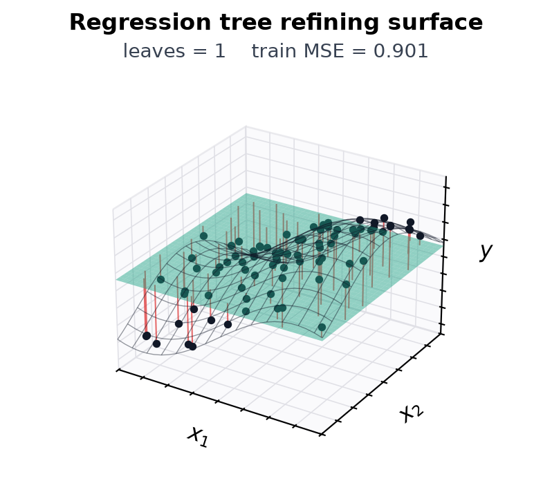
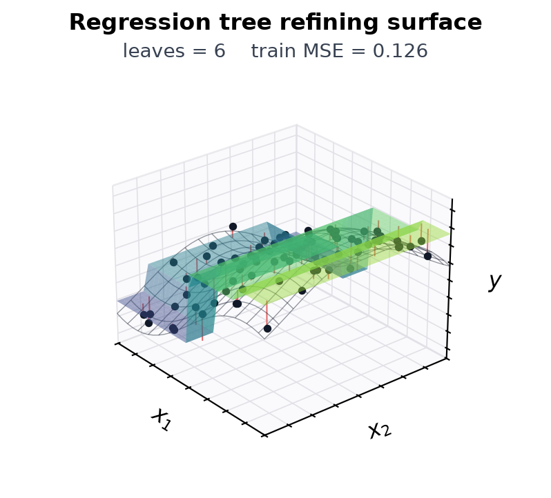

क्या देखें: स्लेटी जाली असली smooth function \(h^\star(x_1, x_2)\) है और काले बिंदु noisy training data हैं। शुरू में सिर्फ़ \(1\) leaf है, इसलिए prediction पूरे क्षेत्र पर एक सपाट औसत सतह है। हर कदम पर CART सबसे ज़्यादा squared error घटाने वाला axis-aligned split चुनता है और एक सीढ़ी को दो नई ऊँचाइयों में तोड़ देता है। जैसे-जैसे leaves बढ़ते हैं, यह सीढ़ीदार (piecewise-constant) सतह असली मुड़ी हुई सतह का आकार पकड़ती जाती है।
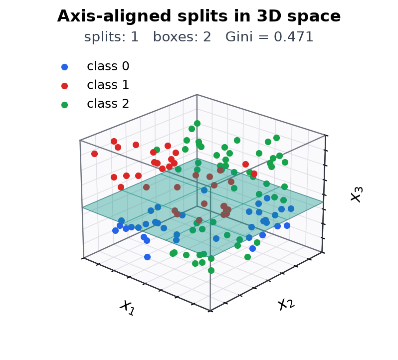
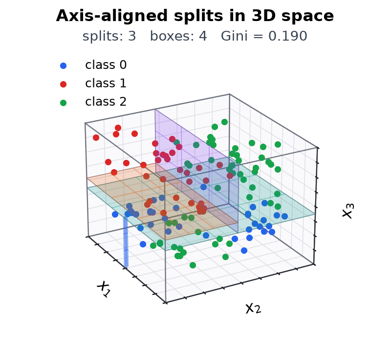
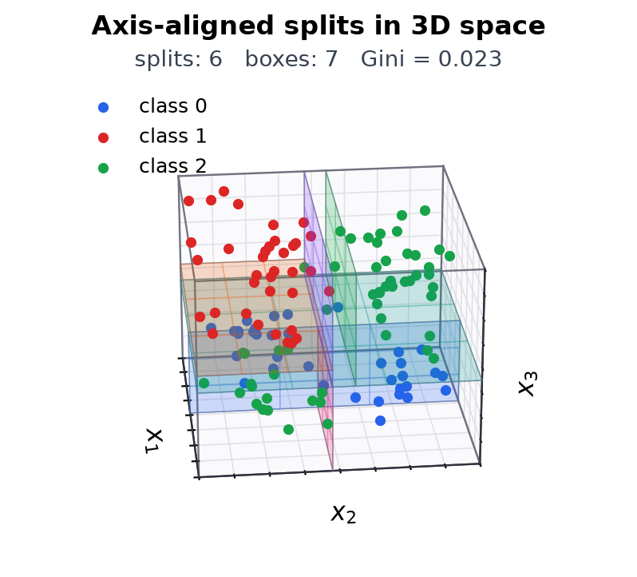
क्या देखें: यहाँ तीनों axes input features \((x_1, x_2, x_3)\) हैं और तीन रंग तीन classes दिखाते हैं। CART classification tree हर कदम पर सबसे ज़्यादा Gini impurity घटाने वाला feature \(j\) और threshold \(t\) चुनता है। हर नया split \(x_j = t\) एक सपाट दीवार की तरह अपने parent डिब्बे को दो छोटे axis-aligned डिब्बों में काटता है। कुछ ही splits में पूरा 3D घन लगभग शुद्ध रंग वाले बक्सों में बँट जाता है।
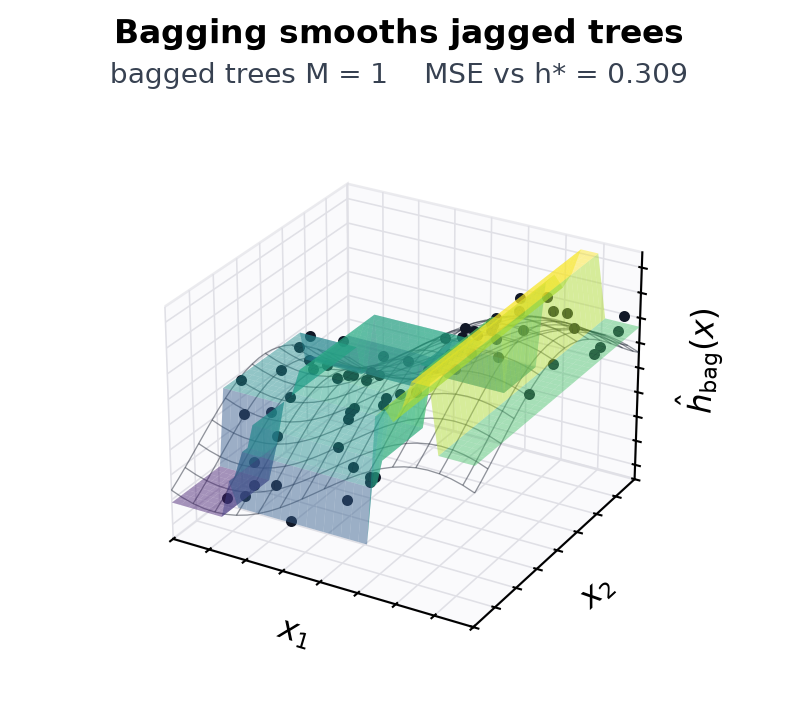
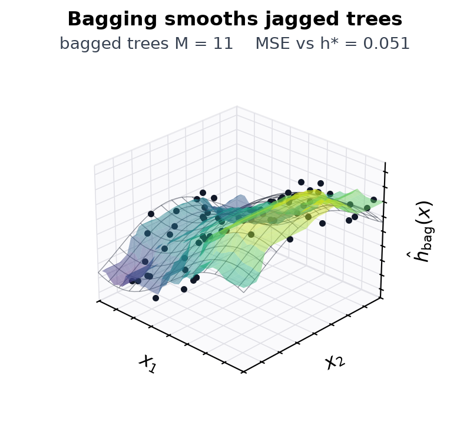

क्या देखें: अकेला गहरा regression tree (\(M = 1\)) noisy बिंदुओं को रटने के चक्कर में बेहद उबड़-खाबड़ और सीढ़ीदार सतह बनाता है (high variance)। हर frame में हम एक नया bootstrap sample खींचकर उस पर उगाया गहरा tree औसत में जोड़ते हैं। जैसे-जैसे \(M\) बढ़ता है, अलग-अलग पेड़ों की बेतरतीब उछालें एक-दूसरे को काट देती हैं। औसत सतह चिकनी होकर स्लेटी जाली (\(h^\star\)) के करीब आ जाती है और test MSE साफ़ गिरता है।
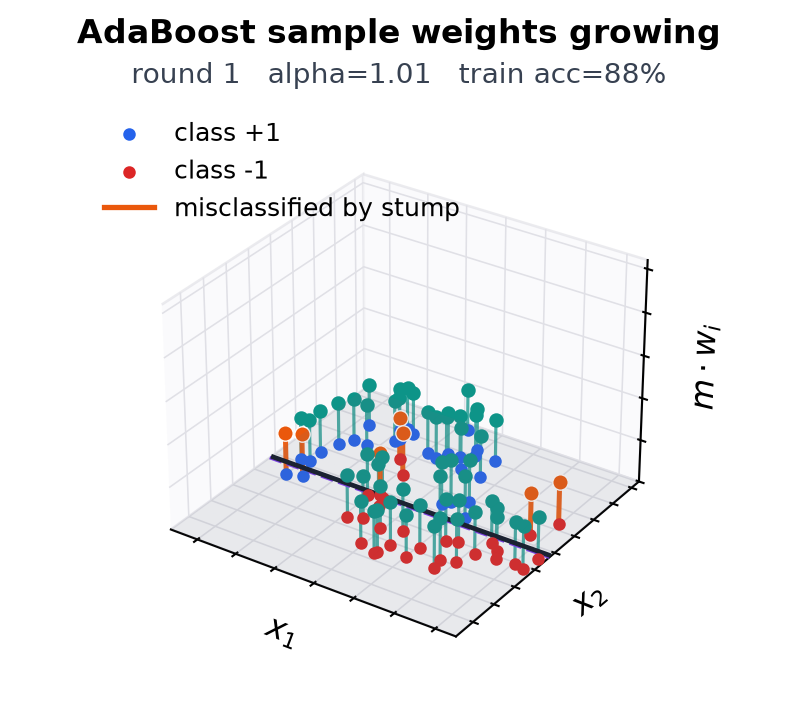
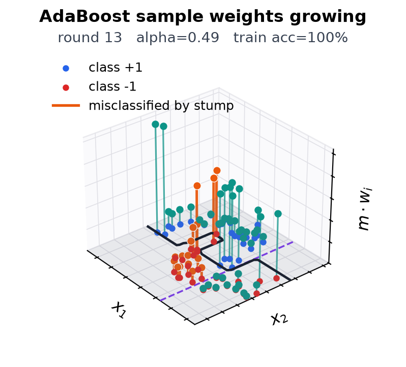
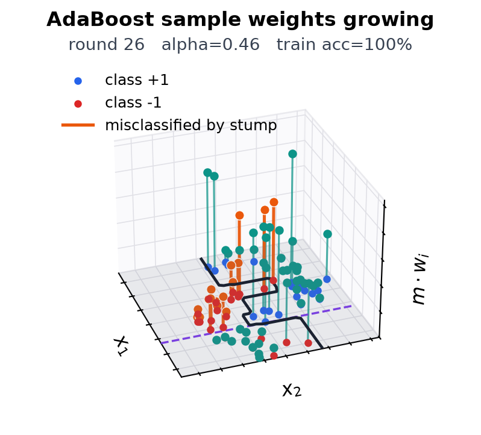
क्या देखें: फ़र्श (\(z = 0\)) पर दो मुड़ी हुई classes के बिंदु हैं और खड़ी डंडियों की ऊँचाई हर बिंदु का scaled sample weight \(m \cdot w_i^{(t)}\) दिखाती है। शुरू में सब डंडियाँ बराबर (\(1\)) हैं। हर round में एक सरल decision stump (टूटी रेखा) लगता है: जिन बिंदुओं पर गलती होती है (नारंगी), उनका weight \(e^{+\alpha_t}\) से उछलता है और आसान बिंदुओं का घटता है। फ़र्श पर काली boundary सारे stumps के \(\alpha_t\)-weighted वोट से मुड़कर पूरे डेटा को अलग कर देती है।
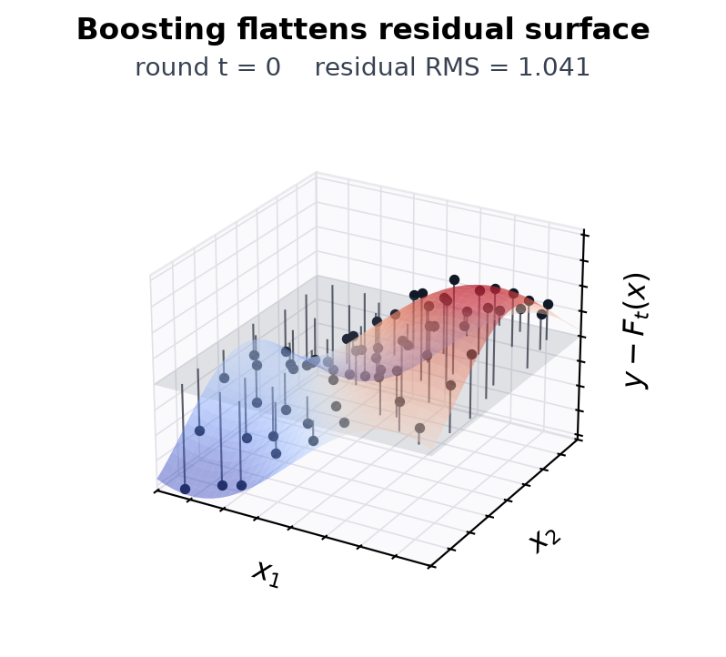

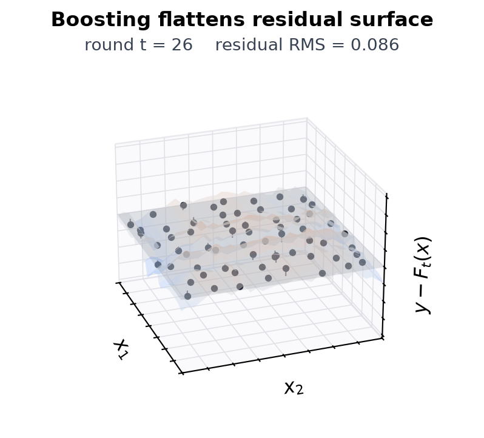
क्या देखें: यहाँ ऊँचाई खुद target नहीं बल्कि बची हुई गलती यानी residual \(y - F_t(x)\) है, और बीच का स्लेटी समतल शून्य गलती (\(z = 0\)) दिखाता है। \(t = 0\) पर \(F_0(x) = \bar{y}\) है, इसलिए लाल पहाड़ और नीली घाटियाँ बहुत गहरी हैं। हर round में depth-2 का एक छोटा regression tree इन्हीं residuals पर fit होता है और \(\nu h_t(x)\) घटा देता है। देखते ही देखते पूरी residual सतह दबकर \(z = 0\) के सपाट तल पर बैठ जाती है।
Python Example
इसे खुद चलाएँ: dhruv_ai_tutorial/.venv/bin/python dhruv_ai_tutorial/chapters/L09_tree_ensembles/example.py
"""Lecture 9 example: CART Tree (Gini), Bagging और AdaBoost शुरू से (सिर्फ़ NumPy). Two-moons dataset पर पहले Gini index से पूरा CART classification tree बनाते हैं और depth बढ़ने पर overfitting देखते हैं। फिर गहरे trees की Bagging (OOB accuracy सहित) और decision stumps पर AdaBoost चलाकर train और test accuracy की तुलना करते हैं। """ import numpy as np import matplotlib.pyplot as plt from sklearn.datasets import make_moons # ---------- 1. Data: noisy two moons (250 train, 750 test) ---------- X_all, y_all = make_moons(1000, noise=0.30, random_state=8) X_tr, y_tr = X_all[:250], y_all[:250] # labels {0, 1} X_te, y_te = X_all[250:], y_all[250:] # ---------- 2. CART Classification Tree (Gini impurity, सिर्फ़ NumPy) ---------- def gini_of(y): p = np.mean(y) return 2.0 * p * (1.0 - p) # K=2 के लिए 1 - p^2 - (1-p)^2 = 2p(1-p) def best_gini_split(X, y): """सभी features और midpoints पर सबसे बड़े Gini gain वाला split ढूँढें।""" m = len(y) if m < 2 or gini_of(y) == 0.0: return None parent_g, best = gini_of(y), None n_l = np.arange(1, m) n_r = m - n_l for j in range(X.shape[1]): order = np.argsort(X[:, j]) xj, yj = X[order, j], y[order] mask = xj[:-1] < xj[1:] if not np.any(mask): continue l_pos = np.cumsum(yj)[:-1] p_l, p_r = l_pos / n_l, (yj.sum() - l_pos) / n_r w_gini = np.where(mask, (n_l * 2 * p_l * (1 - p_l) + n_r * 2 * p_r * (1 - p_r)) / m, np.inf) k = int(np.argmin(w_gini)) gain = parent_g - w_gini[k] if gain > 1e-12 and (best is None or gain > best[0]): best = (gain, j, 0.5 * (xj[k] + xj[k + 1])) return best def fit_cart(X, y, max_depth=10): prob = float(np.mean(y)) sp = None if max_depth == 0 else best_gini_split(X, y) if sp is None: return ("leaf", prob) _, j, thr = sp left = X[:, j] <= thr return ("node", j, thr, fit_cart(X[left], y[left], max_depth - 1), fit_cart(X[~left], y[~left], max_depth - 1)) def predict_prob_cart(node, X): if node[0] == "leaf": return np.full(len(X), node[1]) _, j, thr, l_child, r_child = node return np.where(X[:, j] <= thr, predict_prob_cart(l_child, X), predict_prob_cart(r_child, X)) def acc(y_hat, y_true): return float(np.mean(y_hat == y_true)) # ---------- 3. Bagging + Out-of-Bag (OOB) estimate ---------- def fit_bagging(X, y, n_trees=50, max_depth=15, seed=0): rng = np.random.default_rng(seed) m = len(y) trees, oob_sum, oob_cnt = [], np.zeros(m), np.zeros(m) for _ in range(n_trees): boot = rng.integers(0, m, size=m) # with replacement चुनाव tr = fit_cart(X[boot], y[boot], max_depth=max_depth) trees.append(tr) oob = np.ones(m, dtype=bool) oob[boot] = False # लगभग 36.8% छूटे हुए examples oob_sum[oob] += predict_prob_cart(tr, X[oob]) oob_cnt[oob] += 1 v = oob_cnt > 0 return trees, acc((oob_sum[v] / oob_cnt[v]) >= 0.5, y[v]) def predict_bagging_prob(trees, X): return np.mean([predict_prob_cart(t, X) for t in trees], axis=0) # ---------- 4. AdaBoost with Decision Stumps (labels {-1, +1}) ---------- def fit_adaboost(X, y01, n_rounds=80): y = np.where(y01 == 1, 1.0, -1.0) w = np.full(len(y), 1.0 / len(y)) stumps = [] for _ in range(n_rounds): best = None for j in range(X.shape[1]): vals = np.unique(X[:, j]) thrs = np.r_[vals[0] - 0.1, 0.5 * (vals[:-1] + vals[1:]), vals[-1] + 0.1] preds = np.where(X[:, j][:, None] <= thrs[None, :], 1.0, -1.0) err_pos = (w[:, None] * (preds != y[:, None])).sum(axis=0) for pol, errs in ((1.0, err_pos), (-1.0, 1.0 - err_pos)): k = int(np.argmin(errs)) if best is None or errs[k] < best[0]: best = (float(errs[k]), j, float(thrs[k]), pol) err, j, thr, pol = best err = np.clip(err, 1e-10, 1 - 1e-10) alpha = 0.5 * np.log((1.0 - err) / err) # weak learner का वोट weight w *= np.exp(-alpha * y * np.where(X[:, j] <= thr, pol, -pol)) w /= w.sum() stumps.append((alpha, j, thr, pol)) return stumps def adaboost_margin(stumps, X): return sum(a * np.where(X[:, j] <= thr, pol, -pol) for a, j, thr, pol in stumps) # ---------- 5. प्रयोग और तुलना ---------- print("1) अकेला CART Tree (Gini): depth का असर") print("max_depth train acc test acc") cart_models = {d: fit_cart(X_tr, y_tr, max_depth=d) for d in (1, 2, 3, 5, 10, 15)} for d, tr in cart_models.items(): print(f"{d:9d} {acc(predict_prob_cart(tr, X_tr) >= 0.5, y_tr):11.3f} " f"{acc(predict_prob_cart(tr, X_te) >= 0.5, y_te):10.3f}") bag_trees, _ = fit_bagging(X_tr, y_tr, n_trees=50, max_depth=15, seed=7) print("\n2) Bagging (गहरे depth=15 trees): M बढ़ाने पर variance घटना") print("trees M train acc OOB acc test acc") for M in (1, 5, 15, 50): sub, oob_m = fit_bagging(X_tr, y_tr, n_trees=M, max_depth=15, seed=7) print(f"{M:7d} {acc(predict_bagging_prob(sub, X_tr) >= 0.5, y_tr):13.3f} " f"{oob_m:9.3f} {acc(predict_bagging_prob(sub, X_te) >= 0.5, y_te):11.3f}") stumps = fit_adaboost(X_tr, y_tr, n_rounds=80) print("\n3) AdaBoost (depth=1 decision stumps): M बढ़ाने पर bias घटना") print("rounds M train acc test acc") for M in (1, 5, 15, 40, 80): print(f"{M:8d} {acc(adaboost_margin(stumps[:M], X_tr) >= 0, y_tr):12.3f} " f"{acc(adaboost_margin(stumps[:M], X_te) >= 0, y_te):10.3f}") # ---------- 6. Decision boundaries का चित्र ---------- g1, g2 = np.meshgrid(np.linspace(-1.7, 2.7, 200), np.linspace(-1.2, 1.7, 200)) G = np.c_[g1.ravel(), g2.ravel()] panels = [("Deep CART (depth=15)", predict_prob_cart(cart_models[15], G), acc(predict_prob_cart(cart_models[15], X_te) >= 0.5, y_te)), ("Bagging (50 deep trees)", predict_bagging_prob(bag_trees, G), acc(predict_bagging_prob(bag_trees, X_te) >= 0.5, y_te)), ("AdaBoost (80 stumps)", 1 / (1 + np.exp(-2 * adaboost_margin(stumps, G))), acc(adaboost_margin(stumps, X_te) >= 0, y_te))] fig, axes = plt.subplots(1, 3, figsize=(13, 3.9)) for ax, (name, prob, te_a) in zip(axes, panels): Z = prob.reshape(g1.shape) ax.contourf(g1, g2, Z, levels=20, cmap="coolwarm", alpha=0.58) ax.contour(g1, g2, Z, levels=[0.5], colors="k", linewidths=1.4) ax.scatter(X_te[:, 0], X_te[:, 1], c=y_te, cmap="coolwarm", s=13, edgecolor="k", linewidth=0.25) ax.set(title=f"{name}\ntest acc = {te_a:.3f}", xlabel="x1", ylabel="x2") fig.tight_layout() fig.savefig("result.png", dpi=130)
1) अकेला CART Tree (Gini): depth का असर
max_depth train acc test acc
1 0.820 0.805
2 0.900 0.877
3 0.900 0.877
5 0.968 0.883
10 1.000 0.855
15 1.000 0.855
2) Bagging (गहरे depth=15 trees): M बढ़ाने पर variance घटना
trees M train acc OOB acc test acc
1 0.952 0.867 0.873
5 0.984 0.858 0.873
15 0.992 0.892 0.888
50 0.996 0.904 0.892
3) AdaBoost (depth=1 decision stumps): M बढ़ाने पर bias घटना
rounds M train acc test acc
1 0.824 0.789
5 0.876 0.836
15 0.916 0.877
40 0.948 0.887
80 0.956 0.893
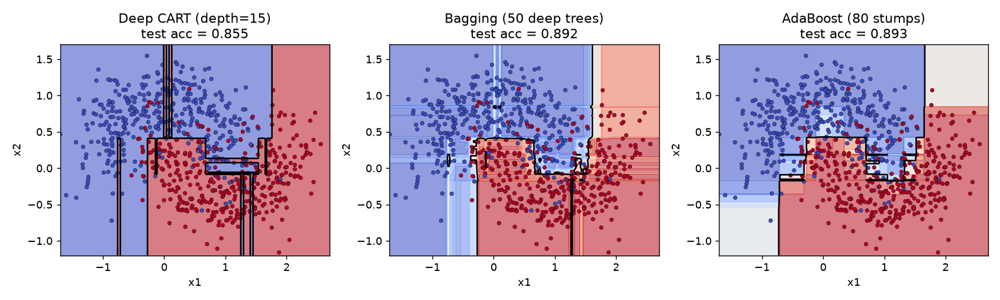